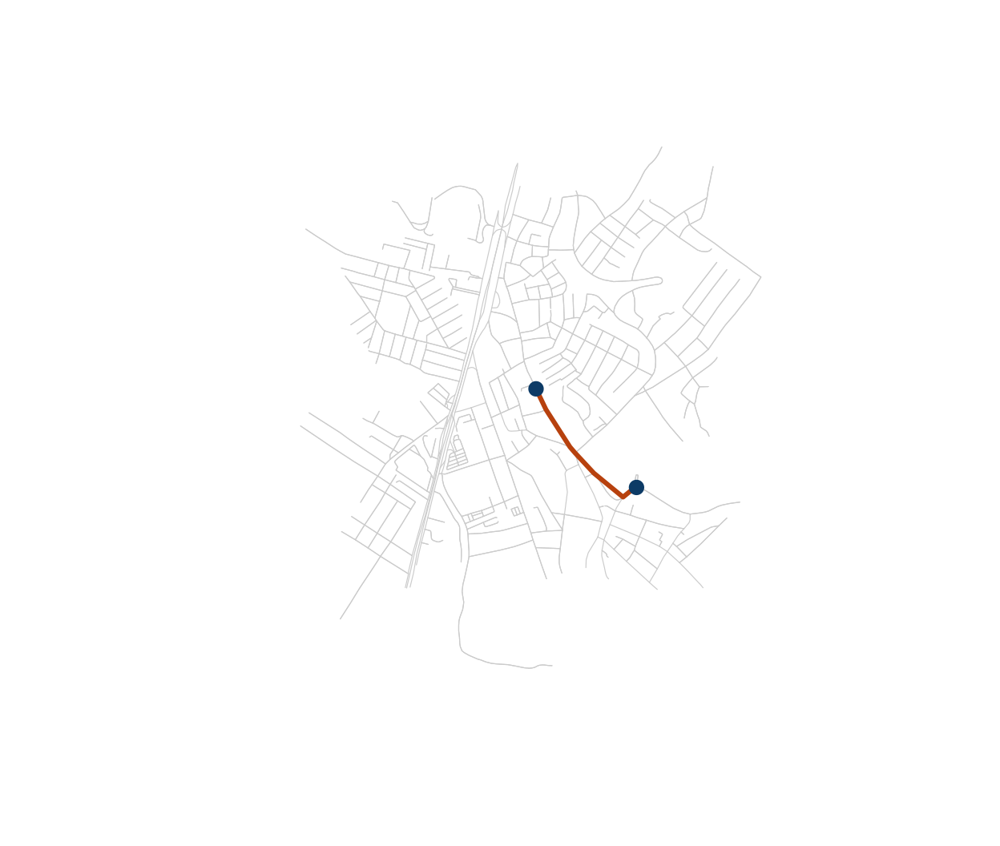
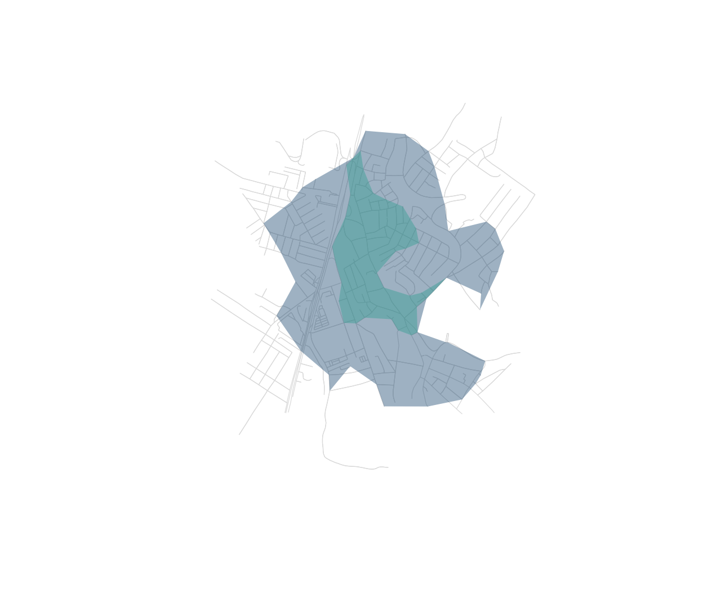

library(osmnxr)
g <- ox_example("olinda")Routing in osmnxr runs in the Rust core (Dijkstra, Yen,
multi-source). We use the bundled real network of central Olinda,
Brazil, so this runs offline.
Shortest path by distance
Snap two coordinates to the nearest nodes, then route between them:
orig <- ox_nearest_nodes(g, x = -34.8553, y = -8.0089)
dest <- ox_nearest_nodes(g, x = -34.8505, y = -8.0125)
route <- ox_shortest_path(g, orig, dest, weight = "length")
length(route) # nodes along the route
#> [1] 8
route_xy <- sf::st_coordinates(g$nodes)[match(route, g$nodes$osmid), ]
plot(g, col = "grey80", lwd = 0.6)
lines(route_xy, col = "#b7410e", lwd = 3)
points(route_xy[c(1, nrow(route_xy)), ], pch = 19, col = "#0d3b66", cex = 1.2)
Travel time instead of distance
Real routing usually minimises time, not distance. Impute
free-flow speeds from each road’s class, derive per-edge travel times,
then route on them (Boeing 2025, routing module):
g <- ox_add_edge_travel_times(g)
head(g$edges[c("highway", "length", "speed_kph", "travel_time")])
#> Simple feature collection with 6 features and 4 fields
#> Geometry type: LINESTRING
#> Dimension: XY
#> Bounding box: xmin: -34.85889 ymin: -8.00763 xmax: -34.85675 ymax: -8.006154
#> Geodetic CRS: WGS 84
#> highway length speed_kph travel_time geometry
#> 1 trunk 143.05987 80 6.437694 LINESTRING (-34.85776 -8.00...
#> 2 trunk 39.20625 80 1.764281 LINESTRING (-34.85716 -8.00...
#> 3 residential 108.81964 30 13.058356 LINESTRING (-34.85716 -8.00...
#> 4 residential 108.81964 30 13.058356 LINESTRING (-34.85675 -8.00...
#> 5 tertiary 47.55902 40 4.280311 LINESTRING (-34.85867 -8.00...
#> 6 tertiary 47.55902 40 4.280311 LINESTRING (-34.85889 -8.00...
route_t <- ox_shortest_path(g, orig, dest, weight = "travel_time")
identical(route_t, route) # may differ: the fastest route is not always shortest
#> [1] TRUERoute alternatives
ox_k_shortest_paths() returns the k shortest
loopless routes (Yen’s algorithm) — useful for comparing options or
modelling redundancy:
ox_k_shortest_paths(g, orig, dest, k = 3, weight = "travel_time")
#> # A tibble: 3 × 3
#> rank cost path
#> <int> <dbl> <list>
#> 1 1 72.1 <dbl [8]>
#> 2 2 90.7 <dbl [11]>
#> 3 3 111. <dbl [16]>Isochrones (service areas)
An isochrone is the area reachable from an origin within a budget.
With travel_time as the weight, cutoffs are in seconds —
here, 1- and 2-minute drive-time service areas from a central point:
centre <- ox_nearest_nodes(g, x = -34.8553, y = -8.0089)
iso <- ox_isochrone(g, centre, cutoffs = c(60, 120), weight = "travel_time")
iso[c("cutoff", "n_nodes")]
#> Simple feature collection with 2 features and 2 fields
#> Geometry type: POLYGON
#> Dimension: XY
#> Bounding box: xmin: -34.86146 ymin: -8.016166 xmax: -34.84852 ymax: -8.001461
#> Geodetic CRS: WGS 84
#> cutoff n_nodes geometry
#> 1 120 368 POLYGON ((-34.86141 -8.0064...
#> 2 60 104 POLYGON ((-34.85679 -8.0048...
plot(g, col = "grey85", lwd = 0.6)
plot(sf::st_geometry(iso), add = TRUE, border = NA,
col = grDevices::adjustcolor(c("#0d3b66", "#2a9d8f"), 0.4))
Many-to-many distances
For accessibility work you often need a full origin–destination matrix in one call (see the Accessibility article):
hubs <- ox_nearest_nodes(g,
x = c(-34.8553, -34.8505, -34.852),
y = c(-8.0089, -8.0125, -8.006))
round(ox_distance_matrix(g, hubs, hubs, weight = "travel_time"))
#> 8945592343 1206764895 1499391454
#> 8945592343 0 72 73
#> 1206764895 76 0 134
#> 1499391454 73 129 0